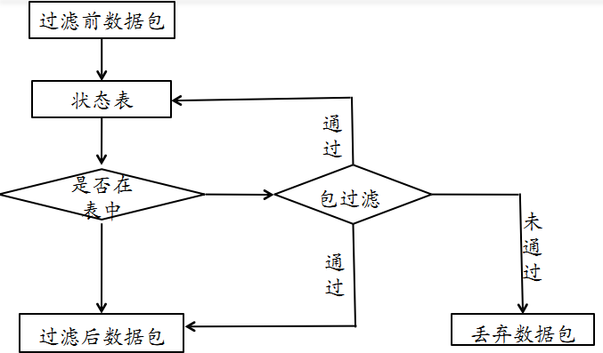

网络安全
黄玮
第八章 防火墙
温故
- 网络与系统渗透无孔不入
- 人
- 应用程序
- 网络设备
- 主机/服务器操作系统
- 物理设备
- 掌握网络与系统渗透方法
- 知己知彼，百战不殆
知新
- 防火墙在网络与系统防御中的作用和地位
- 防火墙实现的关键技术
- 防火墙实例及应用
防火墙概述
定义
在两个 信任程度不同 的网络之间设置的、用于加强
访问控制的 软硬件 保护措施。

信任程度不同的网络
- 外网：外部网络，不仅包括互联网，泛指一切非当前防火墙保护范围的网络
- 内网：内部网络，此处特指防火墙保护范围内的网络
- 边界：外网和内网之间的通信过程必须经过「防火墙」的
访问控制，此时防火墙在整个网络拓扑中的逻辑位置相当于就是网络「边界」
访问控制
- 入站（
Inbound）。从外网发起，目的地是内网的流量方向 - 出站（
Outbound）。从内网发起，目的地是外网的流量方向 - 防外不防内
- 防外：与外部网络有关的流量可以被防火墙审查，进而达到保护效果
- 不防内：非
入站和出站流量，属于内部网络中节点之间的流量由于不流经防火墙，所以防火墙无法对流量进行审查，自然就无法保护了
访问控制
- 粗粒度防护：取决于网络防火墙对网络流量的检查 粒度 ，绝大多数情况下我们使用的都是网络层防火墙，不具备 深度包检测 能力
- 深度包检测（
Deep Packet Insepction,DPI）：又称 完全数据包探测（complete packet inspection） 或 信息萃取（Information eXtraction，IX），是一种网络数据包过滤技术，用来检查通过检测点数据包的内容负载部分（也可能包含其报文头部）
为什么要强调 深度包检测 这个概念？
因为只有看见，才能让「访问控制」有的放矢，才能落实保护。
防火墙发展简史
“上古” 防火墙
- 第一代防火墙
- 采用了包过滤技术
- 第二代、第三代防火墙
- 1989 年，推出了电路层防火墙和应用层防火墙的初步结构
- 第四代防火墙
- 1992 年，开发出了基于动态包过滤技术的第四代防火墙
- 第五代防火墙
- 1998 年，NAI公司推出一种自适应代理技术，可以称之为第五代防火墙
现代防火墙
- 一体化安全网关 UTM
- 统一威胁管理
- 整合防火墙、入侵检测、入侵保护、防病毒、防垃圾邮件等综合功能
- 应用防火墙
- 又可以称为IPS：入侵保护
- 普遍采用了
深度包检测技术- 病毒防火墙
- Web 防火墙
- VoIP 防火墙
- 。。。
防火墙现状与发展
- 网络安全基础设施必有一席之地
- 开源产品和商业产品百家齐放
- 不断提升的 吞吐性能
- 接入带宽：百兆 / 千兆 / 万兆
- 并发处理能力（状态检测防火墙）：千、万、十万、百万
防火墙现状与发展
- 持续发展的
深度包检测- 支持识别的应用层协议种类越来越多
- 加密流量的处理方式「八仙过海各显神通」
- 集成恶意代码、垃圾信息检测等多样化防护能力
- 增值功能越来越多
- 代理、负载均衡、计费、VPN 等
- 满足云计算环境中的防火墙部署需求
- 虚拟化能力
- SDN 能力
华为、深信服（Sangfor）、启明星辰（Venustech）、山石网科（Hillstone）、新华三（H3C）
防火墙技术原理
防火墙关键技术
- 包过滤技术
- 状态检测技术
- 应用级代理技术
包过滤技术

检查数据包的报头信息
- IP 数据报的源 IP 地址、目的 IP 地址、协议类型，选项字段等
- TCP 数据包的源端口、目标端口、标志段等
- UDP 数据包的源端口、目标端口
- ICMP 类型
包过滤技术的优点
- 不需要内部网络用户做任何配置，对用户来说是完全透明的
- 过滤速度快，效率高
包过滤技术的缺点
- 不能进行数据内容级别的访问控制
- 一些应用协议不适合用数据报过滤
- 过滤规则的配置复杂，容易产生冲突和漏洞
状态检测技术


状态检测技术的优点
- 状态表是动态建立的，可以实现对一些复杂协议建立的临时端口进行有效的管理
- 状态检测技术是为每一个会话连接建立、维护其状态信息，并利用这些状态信息对数据包进行过滤
- 动态状态表是状态检测防火墙的核心，利用其可以实现比包过滤防火墙更强的控制访问能力
状态检测技术的缺点
- 没有对数据包内容进行检测，不能进行数据内容级别的控制
- 允许外网主机与内网主机直接连接，增加了内网主机被外部攻击者直接攻击的风险
应用级代理

应用级代理示例

应用级代理优点
- 内部网络的拓扑、IP 地址等被代理防火墙屏蔽，能有效实现内外网络的隔离
- 具有强鉴别和日志能力，支持用户身份识别，实现用户级的安全
- 能进行数据内容的检查，实现基于内容的过滤，对通信进行严密的监控
- 过滤规则比数据包过滤规则简单
应用级代理缺点
- 代理服务的额外处理请求降低了过滤性能，其过滤速度比包过滤器速度慢
- 需要为每一种应用服务编写代理软件模块，提供的服务数目有限
- 对操作系统的依赖程度高，容易因操作系统和应用软件的缺陷而受到攻击
防火墙的实现技术
以 Linux 操作系统上的 Netfilter/iptables 机制为例
Netfilter/iptables 框架简介
Netfilter/iptables从Linux内核版本2.4开始，默认被包含在内核源代码树中- 可以对操作系统的流入和流出数据报文进行控制
- 防火墙
- NAT
- 数据报文自定义修改
Netfilter工作在系统内核层iptables工作在用户态
Netfilter/iptables 架构
Netfilter/iptables 架构

iptables 基本概念
- 表(tables)
- filter表、nat表、mangle表、raw表
- 链(chains)
- 数据包的传输路径，每条链其实就是众多规则中的一个检查清单
- Input、Forward、PreRouting、PostRouting、Output
- 数据包的传输路径，每条链其实就是众多规则中的一个检查清单
- 规则(rules)
- 网络管理员预定义的网络 访问控制策略
iptables 基本概念
- filter 表
- 报文过滤
- 只读过滤报文
- nat 表
- 实现 NAT 服务
- mangle表
- 报文处理：修改报文和附加额外数据到报文
- raw表
- 可以对收到的报文在连接跟踪前进行处理
- 只作用于
PreRouting和Output链
iptables 中的报文检查流程

raw > mangle > nat > filter
netfilter 架构的数据流图
部署了 Netfilter/iptables 的操作系统

硬件防火墙
- 通用 CPU 架构
- ASIC 架构
- 网络处理器架构
通用 CPU 架构防火墙
- 又被称为x86架构
- 采用通用CPU和PCI总线接口
- 可编程性高
- 更灵活
- 更易扩展
- 产品功能主要由软件实现
- 代表产品
- 大部分的开源/商业软件防火墙（基于*nix系统）
ASIC 架构防火墙
- Application Specific Integrated Circuit
- 专用集成电路
- 一种带有逻辑处理的加速处理器
- 把一些原先由 CPU 完成的经常性和重复工作交给 ASIC 芯片来负责完成
- 交换机、路由器、智能 IC 卡
- 通常配合通用CPU单元来完成复杂运算
- 代表产品
- 大部分国外的商业硬件防火墙
NP 架构防火墙
- Network Processor：网络处理器
- 通用 CPU 架构和 ASIC 架构的折衷
- 开发难度
- 性能
- 灵活性/可扩展性
- 代表产品
- 大部分国内的商业硬件防火墙
三种硬件架构的横向比较
| 架构类型 | X86 | NP | ASIC |
|---|---|---|---|
| 灵活性 | ★★★ | ★★ | ★ |
| 扩展性 | ★★★ | ★★ | ★ |
| 性能 | ★ | ★★ | ★★★ |
| 安全性 | ★ | ★★ | ★★★ |
| 价格 | 低 | 中等 | 较高 |
防火墙的配置和应用
路由模式

透明模式

混合模式

防火墙部署的其他细节
- 双机热备模式
- 避免单点故障
- 负载均衡模式
- 性能扩展
- 避免单点故障
负载均衡模式部署的防火墙

防火墙部署的其他细节
单机防火墙配置
- ufw
- ufw 简介
- ufw 使用
- iptables
- iptables 简介
- iptables 使用
UFW - Uncomplicated Firewall
- UFW 是
Ubuntu开发团队为Ubuntu发行版量身定制的简化版iptables命令行配置工具
ufw 使用
iptables
sudo iptables –help
推荐的 iptables 规则管理方法
# 需要 root 权限
# 导出当前防火墙规则到文件
iptables-save > iptables.rules
# 备份当前规则文件
cp iptables.rules iptables.rules.bak
# 用文本编辑器编辑上一步备份出来的当前 iptables 规则文件的副本 iptables.rules
# 应用编辑后的防火墙规则
# -c 指定在还原 iptables 时候，重置当前的数据包计数器和字节计数器的值为零
iptables-restore < iptables.rules
# 随时可以使用之前备份的 iptables.rules.bak 来重置回最近一次没问题的规则基于防火墙实现 NAT
- 私有地址（private address）属于非注册地址，是专门为组织机构内部使用而划定的。如下图：
- NAT 是将一个地址域（如专用 Intranet）映射到另一个地址域（如 Internet）的标准方法
- NAT 可以将内部网络中的所有节点的地址转换成一个 IP 地址，反之亦然
- 可以应用到防火墙技术里，把个别 IP 地址隐藏起来不被外部发现，使外部无法直接访问内部网络设备
NAT 工作原理
- 静态网络地址转换
- 动态网络地址转换
- 网络地址端口映射
静态地址转换
- 将公网 IP 地址一一对应地转换为内部私有 IP 地址
动态地址转换
- 将内部本地地址与内部合法地址一对一的进行转换 与静态地址转换不同的是它是从内部合法地址池动态分配临时的 IP 地址来对内部本地地址进行转换
网络地址端口映射
将公网 IP 映射到私有 IP ，而外网多个 IP 被映射到同一内部共有 IP 地址的不同端口
防火墙规则调试和审查
防火墙规则调试
按照课本里的 实验四：防火墙规则调试 动手实验完成。
防火墙规则审查
- 静态分析工具（主要是商业工具，缺开源解决方案）
- 防火墙规则的语义理解
- 数据流图分析
- 自动化规则树生成
- 防火墙规则的语义理解
- 黑盒测试工具
- 基于网络扫描器的模糊测试
nftables
摘录 nftables 官网 的一句话描述
nftables replaces the popular {ip,ip6,arp,eb}tables. This software provides a new in-kernel packet classification framework that is based on a network-specific Virtual Machine (VM) and a new nft userspace command line tool. nftables reuses the existing Netfilter subsystems such as the existing hook infrastructure, the connection tracking system, NAT, userspace queueing and logging subsystem.
nftables 与 iptables 的关系
- 均基于
Netfilter内核 nftables简化了配置语法和新增了「语法糖」- 一个工具整合了多重协议栈多个独立工具 {ip,ip6,arp,eb}tables
- 允许一条规则定义多重匹配条件
- 允许一条规则匹配后执行多个 action
nftables提升了规则匹配和报文处理性能nftables支持导出数据为JSON和XML格式nftables增强了调试便利性nftables没有内置默认「表/链」
从 iptables 迁移到 nftables
# 检查当前系统内核是否加载了 nf_tables 内核模块
modinfo nf_tables
# 如下输出信息表示已加载
# filename: /lib/modules/5.7.0-kali1-amd64/kernel/net/netfilter/nf_tables.ko
# alias: nfnetlink-subsys-10
# author: Patrick McHardy <kaber@trash.net>
# license: GPL
# depends: nfnetlink
# retpoline: Y
# intree: Y
# name: nf_tables
# vermagic: 5.7.0-kali1-amd64 SMP mod_unload modversions
# 检查加载了哪些 nf_tables 有关的模块
lsmod | grep nf_tableso
# nf_tables 229376 237 nft_compat,nft_counter,nft_chain_nat
# nfnetlink 16384 4 nft_compat,nf_conntrack_netlink,nf_tables
# 检查当前系统上是否已安装 nftables 工具
apt policy nftables
# nftables:
# Installed: 0.9.6-1
# Candidate: 0.9.6-1
# Version table:
# *** 0.9.6-1 500
# 500 http://http.kali.org/kali kali-rolling/main amd64 Packages
# 100 /var/lib/dpkg/status
# 如果没有安装，则执行安装操作
sudo apt update && sudo apt install nftables
# 导出 iptables 规则
iptables-save > iptables.rules
# 使用 iptables-restore-translate 翻译 iptables 规则并保存
iptables-restore-translate -f iptables.rules > ruleset.nft
# 查看当前 nftables 规则
nft list ruleset
# 确认已备份当前主机的防火墙规则
# nftables 已加载了当前防火墙规则
# 清空 iptables 规则，并准备禁用 iptables 只保留 nftables 用来规则防火墙规则
sudo iptables -F
sudo ip6tables -F主流 Linux 发行版对 nftables 的支持情况
- 从 2014 年 1 月 19 日发布的 Linux 内核源代码 3.13 开始支持
nftables - 2020 年 4 月 28 日发布的 Fedora 32 默认启用 nftables 代替 iptables
- 2019 年 5 月 7 日发布的 RedHat 企业版 8 开始默认启用 nftables 代替 iptables
- 2019 年 7 月 6 日发布的 Debian Buster(10.0) 版本开始默认启用 nftables 代替 iptables
网闸
- 其他别名：安全隔离与信息交换系统 / 物理隔离网闸 / 安全隔离网闸
- 实现 不同安全级别网络 之间的安全隔离，并提供适度可控的 数据交换 的软硬件系统
- 从「隔离」网络的角度来说，和防火墙的作用有相似之处
网闸与防火墙的区别与联系
- 网闸是相对新的一个产品概念，与防火墙相比，网闸缺少标准化的学术模型
- 只应用在「高安全等级」网络保护环境
- 网闸直接采用
物理隔离方式实现 不同信任程度 之间网络的隔离
网闸与防火墙的区别与联系
- 网闸采用基于非 TCP/IP 协议的 数据交换 方式，杜绝基于 TCP/IP 协议的网络攻击手段
- 网闸软硬件实现均不基于通用操作系统，而是走定制化（基于 BSD 或精简安全加固后 Linux 系统、嵌入式操作系统 VxWorks 等）专用操作系统路线
- 网闸不支持跨网络的访问，不同网络之间实现 通信协议 级别隔离，只支持 数据交换 ，且同一时刻只允许「 单向 数据流动」
- 类似「自动化」U 盘数据摆渡系统
防水墙
填补防火墙「防外不防内」的防护能力空白：专注于「内部网络」安全问题
- 信息泄露
- 限制内网的「横向移动」行为
- 和网闸类似，防水墙同样缺少标准化的学术模型，防水墙的安全能力边界并没有统一定义
- 缺少开源解决方案，只有商业解决方案
课后思考题
- 防火墙的典型网络部署方式有哪些
- 防火墙能实现的和不能实现的防护各有哪些